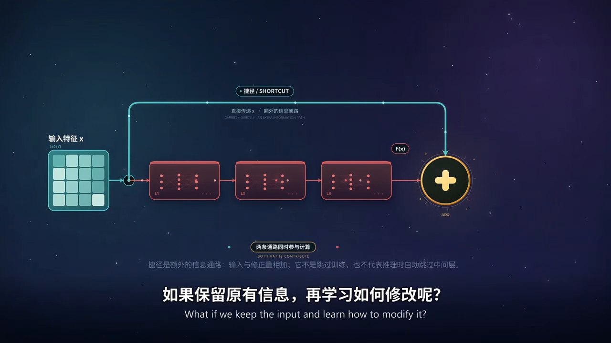
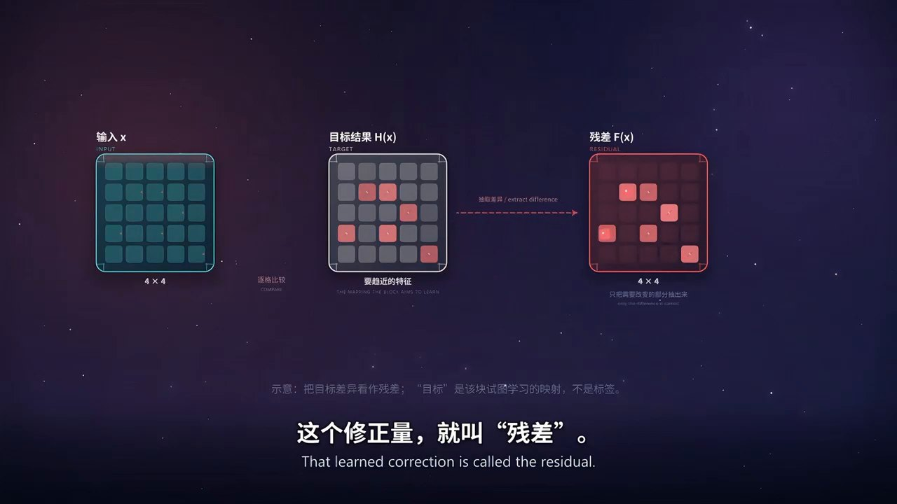

短片播放器
章节 11 глав · нажмите, чтобы перейти
它是什么Что это такое
残差网络（ResNet）是一类深度神经网络结构。它把每个模块的输入 x 直接加到模块的输出上，得到 z = x + F(x)。这里的 F(x) 是模块学到的修正量，也就是「残差」。网络不再直接学习完整的映射 H(x)，而是学习它相对输入的改动量：F(x) = H(x) − x。
z：模块输出 · x：模块输入 · F(x)：残差分支学到的修正量；相加为逐元素相加。
为什么重要Почему это важно
在 2015 年之前，把网络简单加深并不会稳定变好。更深的普通网络常常出现退化：训练误差本身反而更高，说明问题不在拟合能力，而在优化。残差连接把学习目标改成「相对输入的修正量」，让接近恒等映射的情况变得容易表达——只要把 F(x) 压到接近零。
这带来两个直接好处：一是深层网络可以被训练；二是梯度在反向传播时多了一条更短的路径，优化更稳定。ResNet 在 ImageNet 上的结果让「上百层」成为常规配置，也影响了后来大量的视觉与序列模型。
它怎么工作Как это работает
一个残差块有两条路：一条是残差分支，通常是两层卷积加非线性，输出 F(x)；另一条是捷径（shortcut），把输入 x 原样送到相加节点。两条路在末尾逐元素相加，得到 z = x + F(x)。

当某些层的最优变换接近恒等映射时，网络不必用多层去精确复现输入，只要让 F(x) 接近 0。这比学习一个恒等变换容易得多，也更稳定。反过来说，如果该模块确实需要改变输入，F(x) 就会学到一个明显的修正量。

如果两路形状不一致（通道数或空间尺寸不同），需要先用投影把 x 变换到与 F(x) 相同的形状，例如 1×1 卷积，然后才能相加。这一步只是形状匹配，不是「另一条学习分支」。
训练和推理时，两条路径都会计算。捷径不是推理阶段跳过某些层的开关——它始终参与前向计算，也把梯度带回前面的层。
边界与常见误解Границы и заблуждения
- 更深 ≠ 一定更好。深度提升表达能力，也同时增加优化难度；效果取决于设计与训练。
- 退化不是过拟合。过拟合是训练误差低、测试误差高；退化是训练误差本身就变高。
- F(x) ≈ 0 不等于「什么都没学」。它表示该模块选择保留输入，这是恒等映射附近的一种解。
- 捷径不是推理时的「跳过层」。两条路径都参与前向与反向计算，始终共同决定输出。
- 「梯度不会消失」是过度承诺。捷径提供更直接的通路、改善优化，但不保证任意深度都能训练。
- 示意图不是实验数据。短片中的仪表与曲线只用于说明趋势，不对应任何真实测量。
Глубина не гарантирует качество. Деградация — это рост ошибки на обучающей выборке, а не переобучение. F(x) ≈ 0 означает сохранение входа, а не «сеть ничего не выучила». Обходное соединение работает и при обучении, и при выводе.
生成它的提示词Промпт, по которому сделан фильм
本片由一份结构化提示词生成：它锁定了 15 拍时间线、配色语义、科学护栏和编码参数，并要求执行方直接交付成片，而不是方案或分镜表。这份提示词本身也是一件可以复用的「科普生产工具」。
制作与参考Источники
视频、封面与插图由项目作者使用 AI 工具生成、剪辑与校对，封面与示意图取自动画关键帧。内容用于科普学习，不构成专业结论；涉及的数据与结论以原始论文和教材为准。
原始论文：He, Zhang, Ren, Sun. Deep Residual Learning for Image Recognition. arXiv:1512.03385, 2015.